| 日付 | 2026年9月13日（日） |
|---|---|
| 山域 | 奥多摩 |
| メンバー | 家族（妻） |
| 山行形態 | 日帰り |
| アクセス | 車 |
| ルート (Map) | 御岳苑地駐車場 (7:26) - (9:27) 大塚山 - (10:04) 御岳山 - (10:59) 日の出山 (11:29) - (12:56) 御岳苑地駐車場 |
今週末は日本全国天気が悪い。先週新潟に行って失敗しており、
連続して遠出する気にもならない。
昨日の文化祭で登山部の展示写真に「大塚山」が写っていたのでそこに行くことにする。
過去に訪れたことはあるが、記憶にはほぼ無い。
それだけだと短すぎるので、御岳山～日の出山と結んで歩く。
御岳苑地駐車場に車を停める。標高230m。
綺麗な駐車場はガラガラだ。
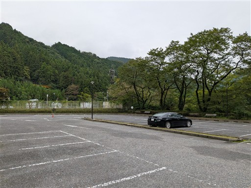
巨大なタービンと弁が展示されている。
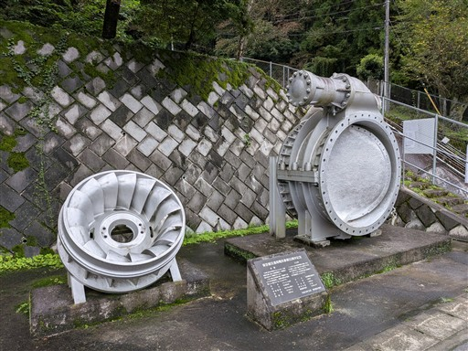
車道歩きを避けて森の中を歩く。ちょっと藪っぽいが歩くのに支障はない。
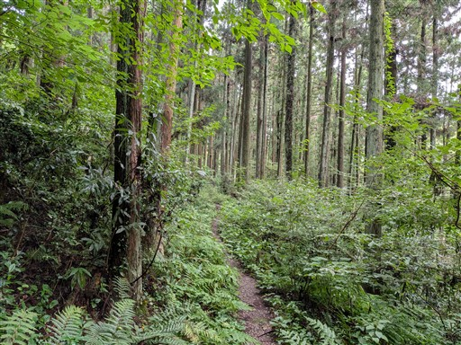
ヤブミョウガの花が咲いている。
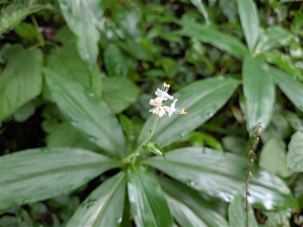
一度車道に出た後、登山道に入って行く。最初は急斜面。
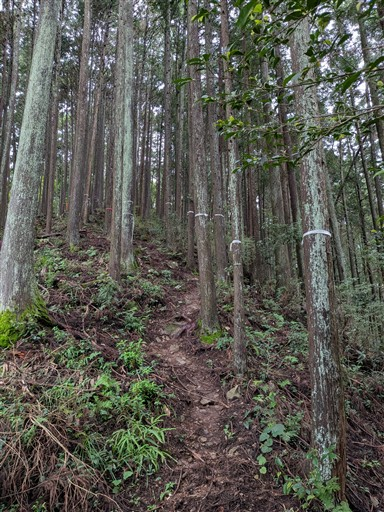
ヒノキの植林地帯。実が大量に落ちている。
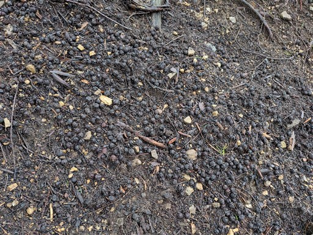
ツチグリ。
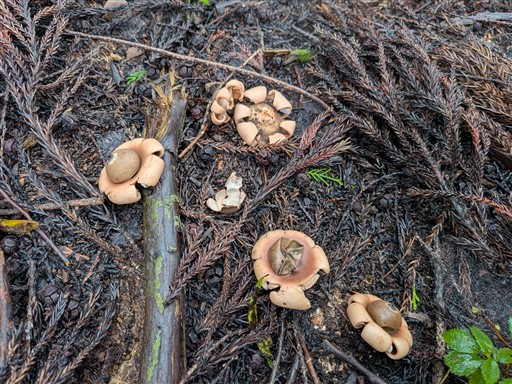
延々と続く植林地帯。木に文字が書かれているのは何かの境界だろうか？
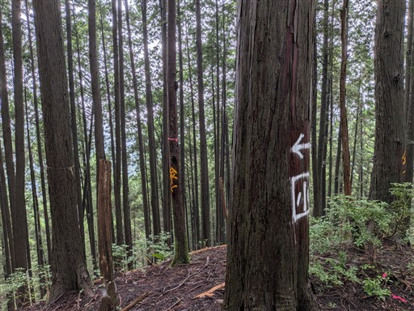
雲の中に入る。
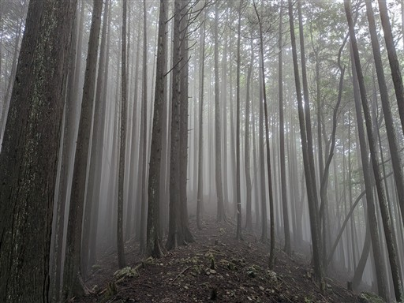
凄まじい数のクモの巣。こんな数のクモの巣は初めて見た。
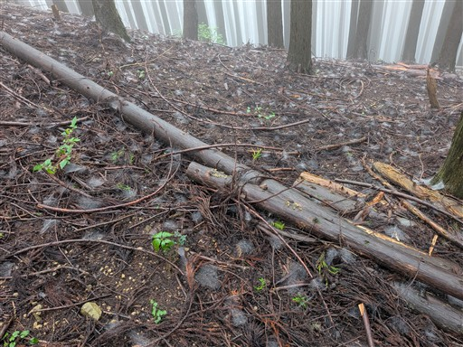
登山道以外は一面クモの巣。地面を歩く虫はたまったものではないだろう。
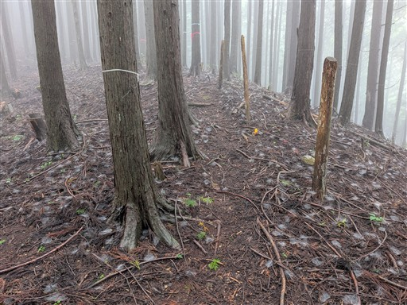
広い登山道に合流する。
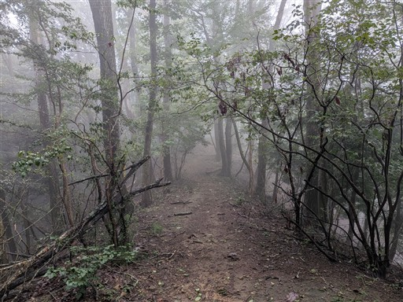
歩いてきた道は木の枝で封鎖されている。
マニアックな道だと思って歩いていたが、やはりという感じ。
ほぼバリエーションルートで、ここにヤマレコで実線を引くのはやめてほしい。
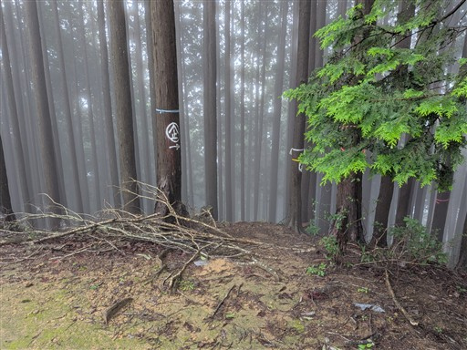
霧に包まれた広い道を歩いていく。
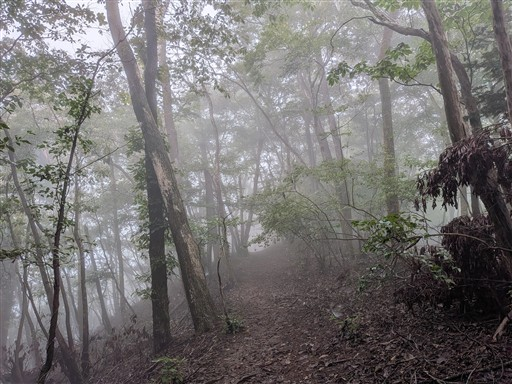
駅名標を模した標識。
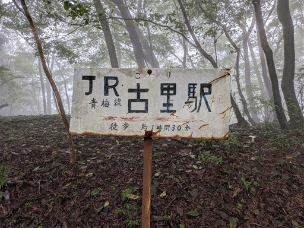
巨大な瘤を持った木。かなりの大きさだ。
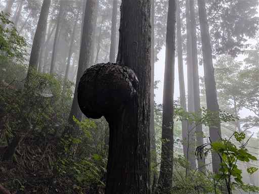
謎の建物。東屋？ちょっと形状がそれっぽくないが、何のために作られたのだろう？
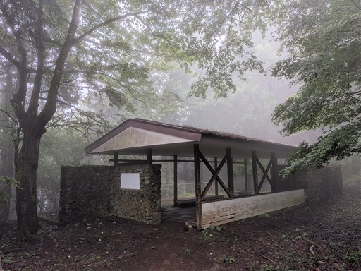
大塚山に到着。標高920m。
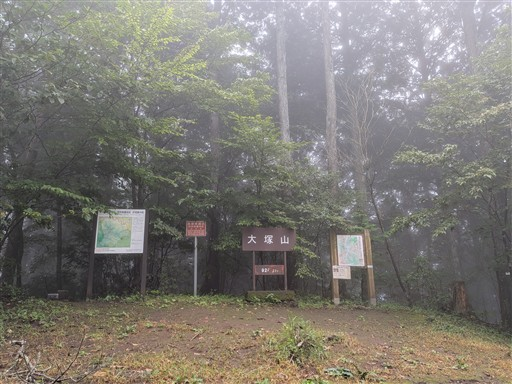
ベンチとテーブルが点在しているが、天気が悪いため陰気だ。
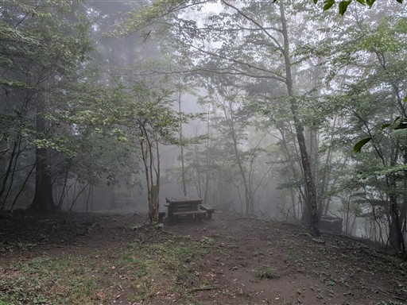
動物除けの柵がある。ここは直登せずに巻道を選択。
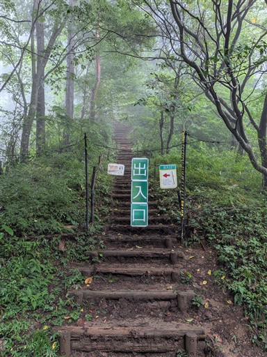
巻道。あとで分かったことだが、まっすぐ行けば産安社に行けたのだが、スキップしてしまった。残念。
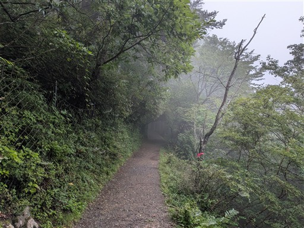
突然、人通りの多い場所に出てくる。ケーブルカー駅から御岳山に続くメインロードに出たようだ。
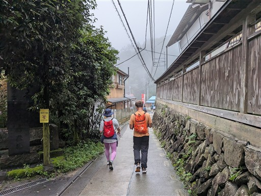
東馬場、歴史ある宿坊。
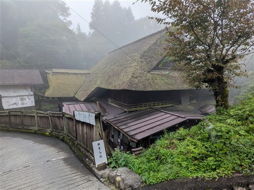
神代ケヤキ。2009年以来、久々の訪問だが、変わらず同じ場所に佇んでいる。
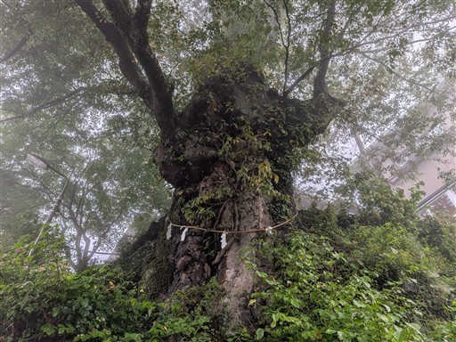
売店が軒を連ねる。シャッターが閉まっている店がそこそこあるのが気になるところ。
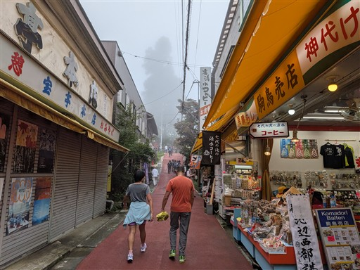
武蔵御嶽神社の鳥居が現れる。その奥に見えるのは随神門。
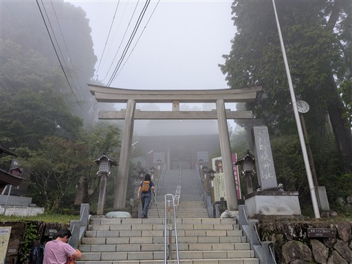
長い階段を登っていく。
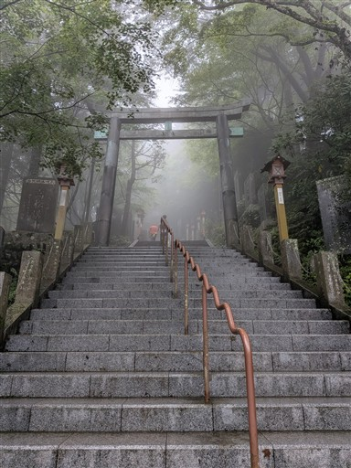
階段の側には石碑が並ぶ。
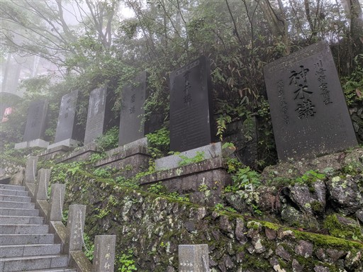
神社が見えてきた。
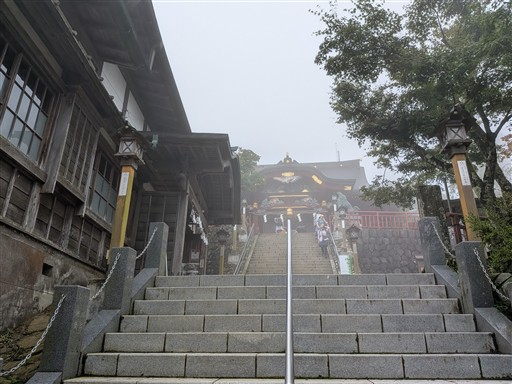
到着。お参りをする。
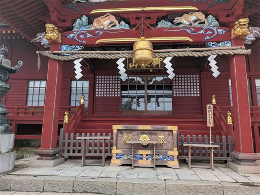
神社の裏に回る。
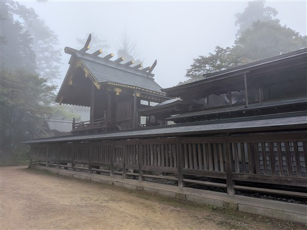
この辺りが御岳山の最高地点。標高929m。
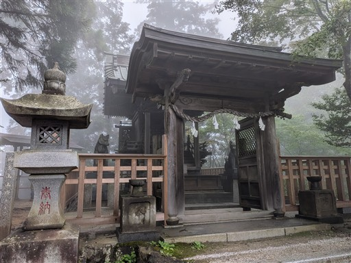
オオカミの狛犬。立派な姿だ。
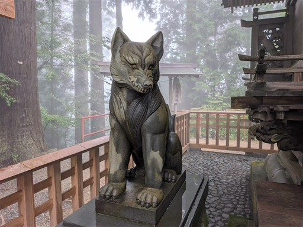
日の出山に向けて歩を進める。
猫が二匹。逃げないが機嫌が悪そう。
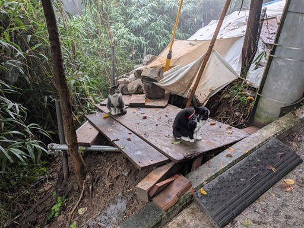
車輪のある家。以前、子供たちを連れて日の出山に行ったのを思い出す。
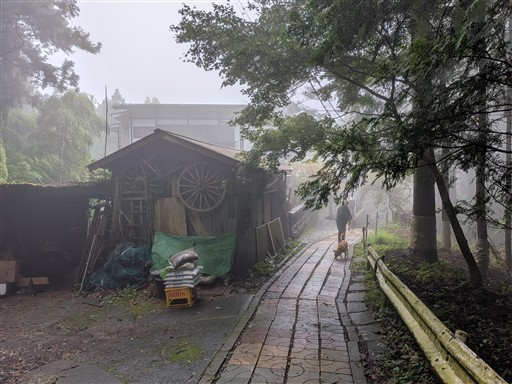
登山道は相変わらず霧に包まれている。
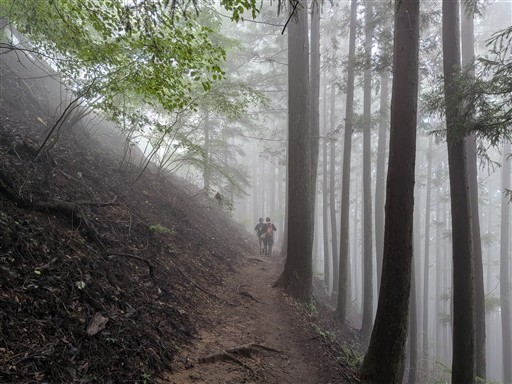
日の出山に到着。標高902m。
展望は無いが、木が無いので少し明るい。
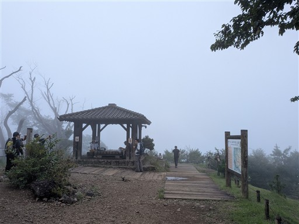
昼食を取ったら山頂出発。以前はつるつる温泉に下ったが、こちらの道は未知だ。
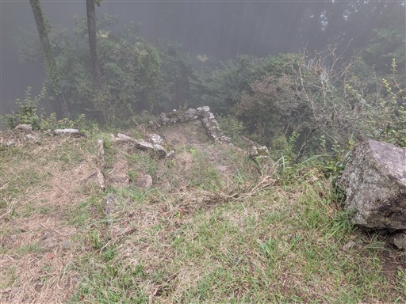
霧の中の植林地帯。景色は変わり映えしない。
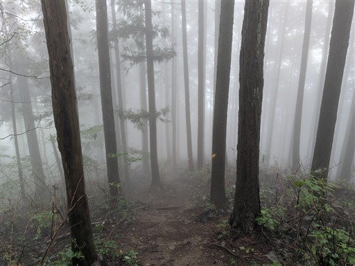
ちょっと草が覆い被さっている。少し濡れているが人通りが多いので問題はない。
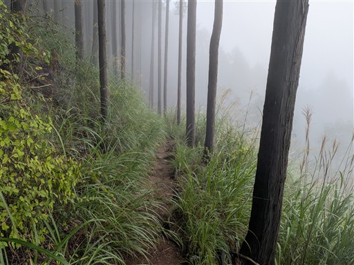
高峰山に到着。正面の尾根に下る予定だが、標識が無い。
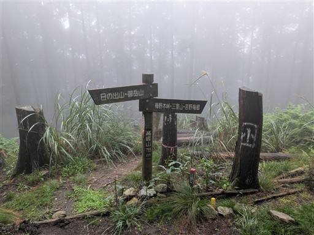
道は比較的明瞭。途中でラニヘッドトレイル書かれた標識を見る。
最近開かれた登山道のようだ。
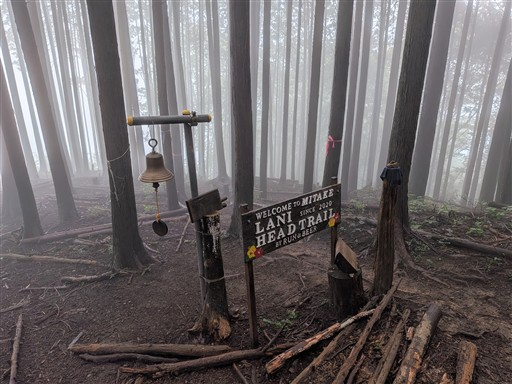
植林地帯を抜けて、展望が広がる。
展望と言っても辛うじて下界が見える程度。
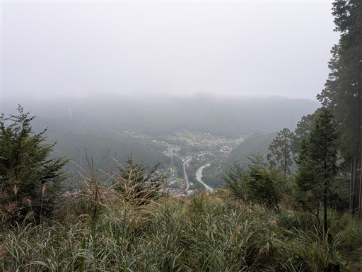
凄まじく暗い植林地帯。間伐を怠っているのだろう。
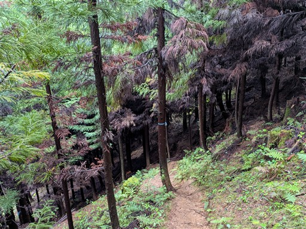
登山口に到着。
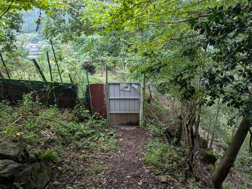
曇り空の奥多摩。
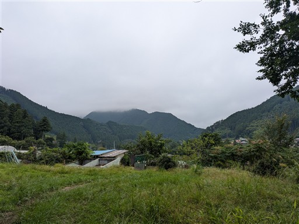
最後は車道を歩いて駐車場に戻る。
登りと下りの道は初めて歩いたが、どちらも歩きにくく、延々と植林地帯が広がる道だった。
天気も悪く、運動のための山登り、という感じの山行だった。
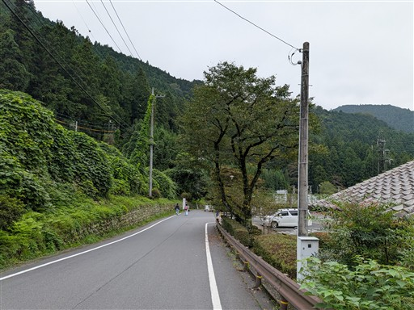